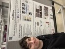
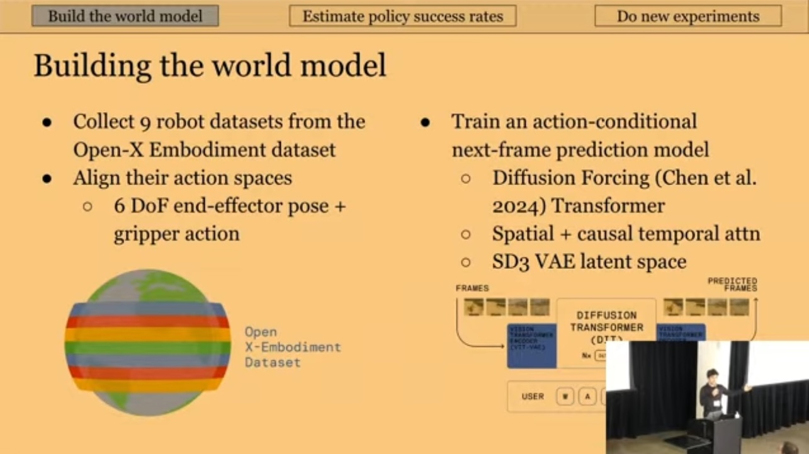

2026
| September | I completed my undergrad at Stanford, spent the summer working with Ilija Radosavovic, and am now starting my PhD here at Stanford. During my undergrad, I was lucky to receive guidance and mentorship from amazing faculty and researchers who helped me find my way. I am especially grateful for Justin Johnson, Fei-Fei Li, Sherry Yang, Percy Liang, and Klemen Kotar. |
| February |
After dreaming of doing a PhD for the last 6 years, I was accepted to the PhD programs at Stanford, Berkeley, and MIT. I also gave my first ever academic talk at the World Modeling Workshop 2026.
  |
| January | My first paper, on using world models for robot policy evaluation, was accepted to ICLR 2026! |
2025
| February | Excited to spend some time at World Labs as a research intern working on world models! |
2024
| October | I spent the past 8 months working on interactive video models, eventually leading to Oasis. We released an open source version on github. I feel very excited about this direction! |
2023
| August | Wrapped up my internship at mosaicml, now part of databricks. This team is so talented and so nice! |